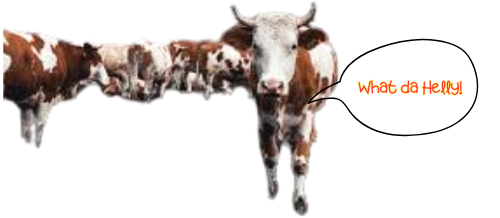

- Animal agriculture produces 65% of the world's nitrous oxide emissions which has a global warming impact 296 times greater than carbon dioxide
- Producing feed for livestock requires energy for fertilizer production, transportation, and other processes, all of which can contribute to greenhouse gas emissions
- Overgrazing and poor land management practices can degrade soil, reducing its ability to store carbon
- Implementing energy-saving measures on farms, such as using timers and sensors on equipment, can reduce energy consumption and associated emissions
- Energy Efficiency: Implementing energy-saving measures on farms, such as using timers and sensors on equipment, can reduce energy consumption and associated emissions
- Breeding animals with lower methane emissions can be a long-term solution